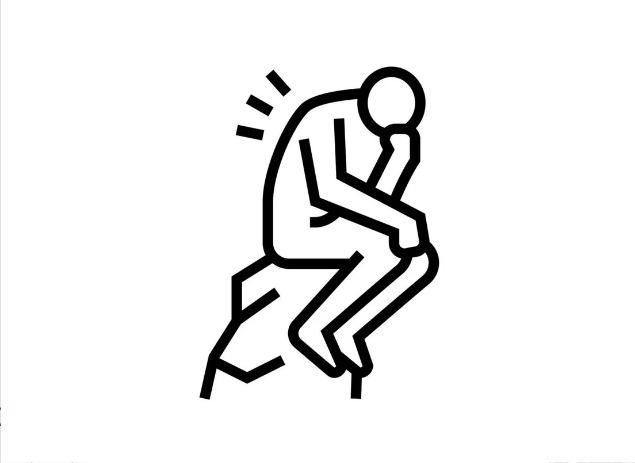

FFILOSOFIA
Experiência Criativa Filosofia Ciberfísico Raciocínio Algorítmico Lógica MatemáticaFILOSOFIA


FILOSOFIA
Neste seminário, abordamos o conceito de "sociedade do cansaço" proposto pelo filósofo Byung-Chul Han. Ele descreve como a exaustão generalizada na sociedade moderna resulta da pressão incessante por desempenho e produtividade. Han argumenta que, ao contrário da sociedade disciplinar descrita por Michel Foucault, a sociedade atual é marcada pelo desempenho, onde as pessoas se autoexploram continuamente em busca de sucesso. Essa dinâmica leva a doenças como depressão e burnout. A cultura do excesso de positividade e a obrigação constante de ser produtivo culminam em um cansaço profundo, tanto físico quanto mental. Han sugere a necessidade de repensar nossas prioridades e formas de organização social para mitigar esses efeitos.